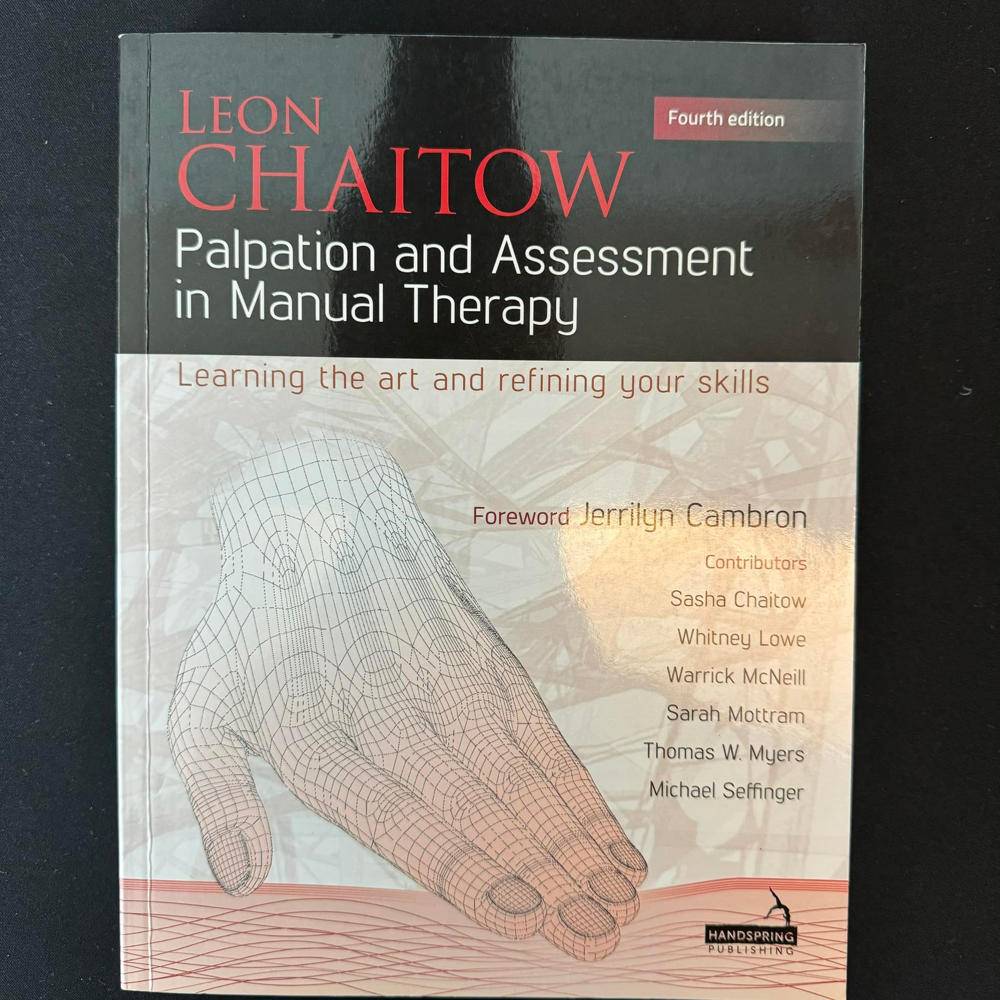
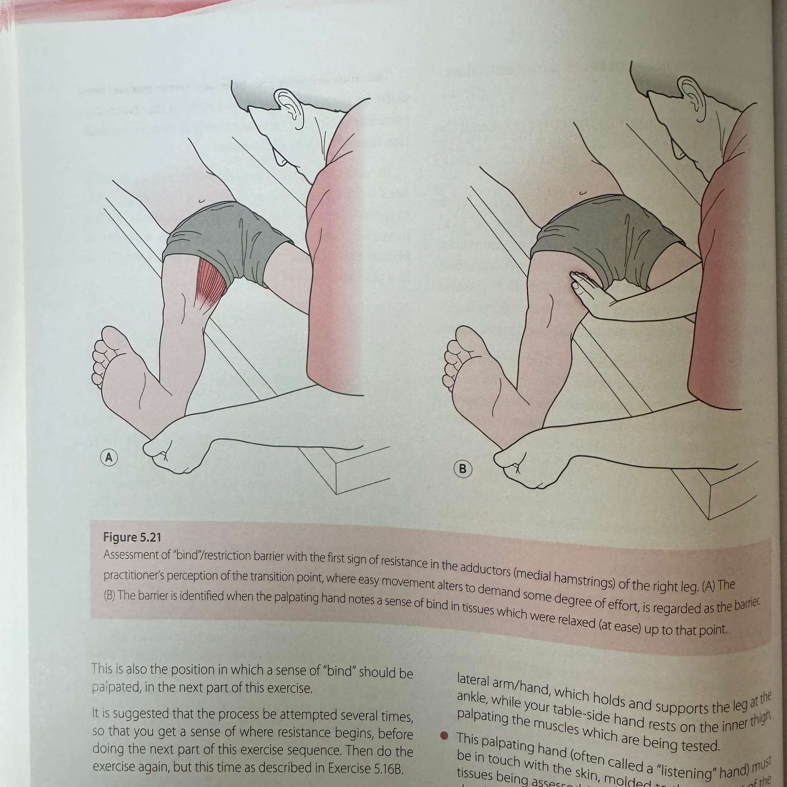
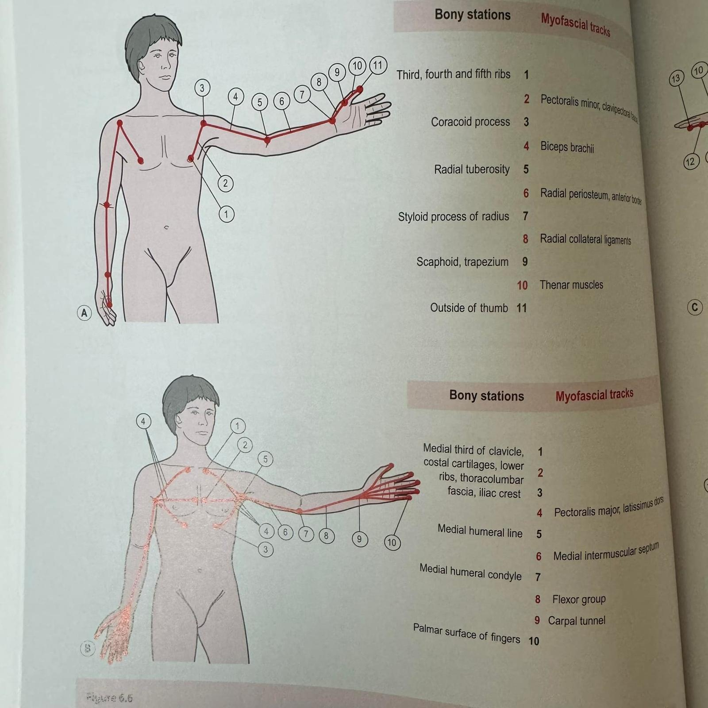
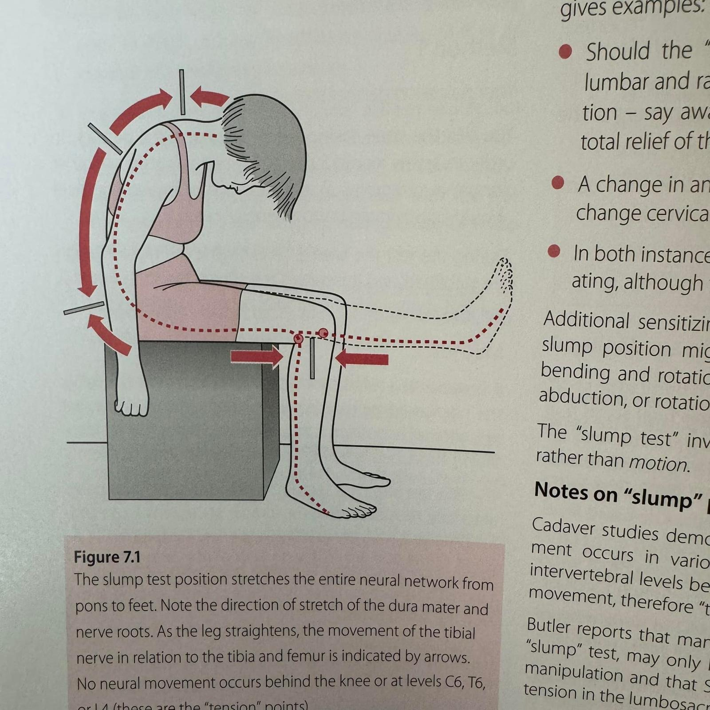
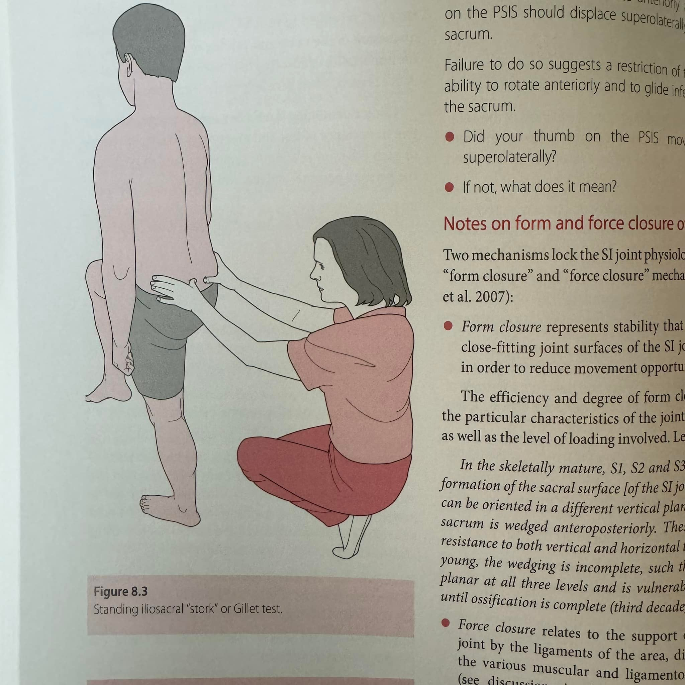
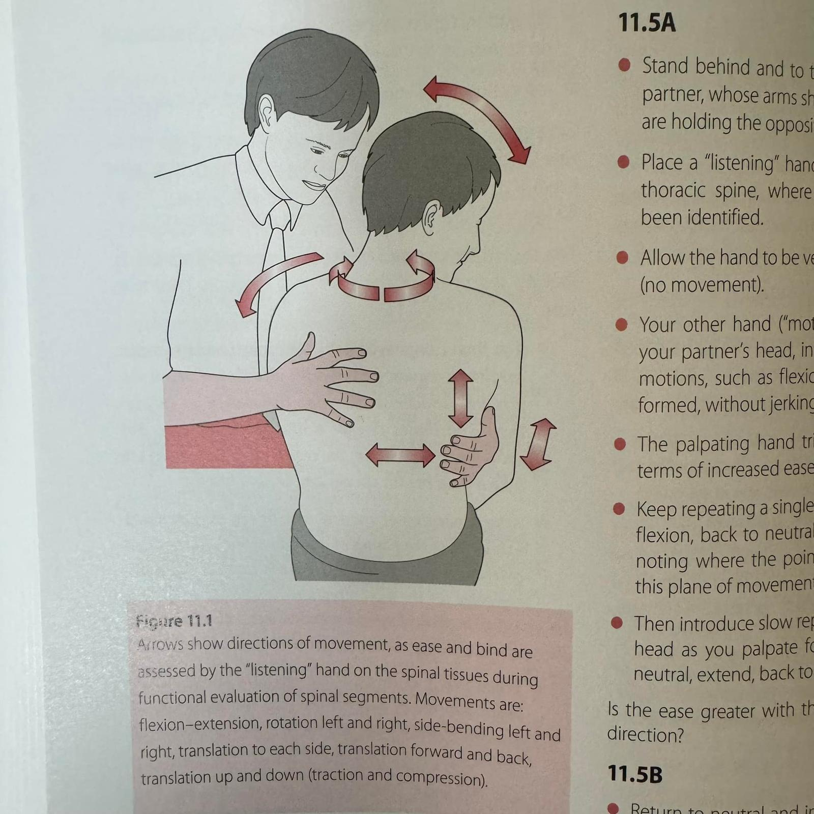
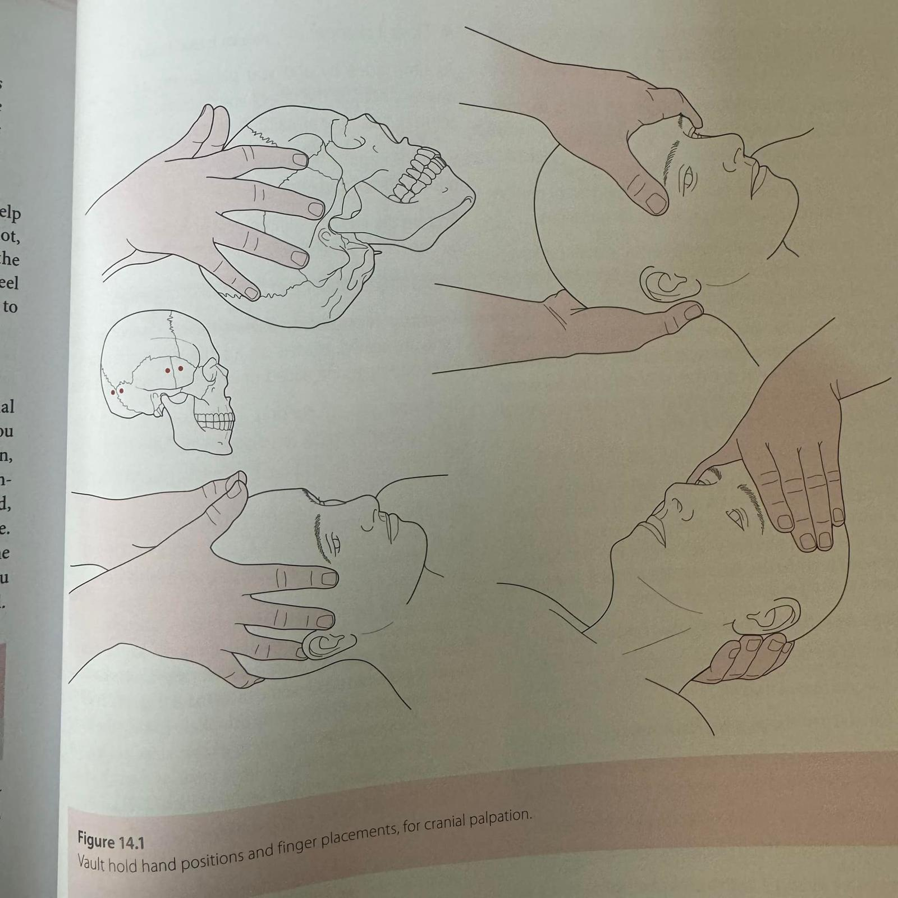
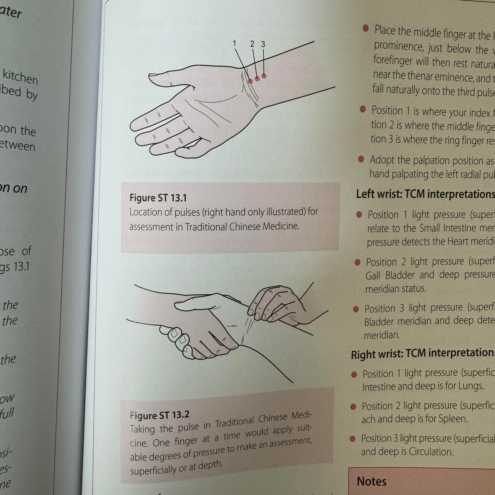
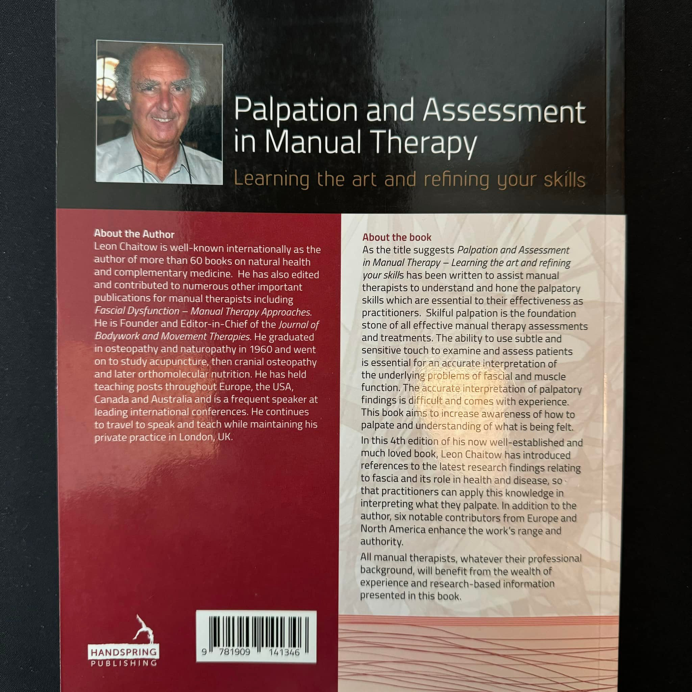

接觸徒手治療也好一段時間，從所謂中醫骨傷科到物理治療領域，會發現有極大的相似性，…
接觸徒手治療也好一段時間，從所謂中醫骨傷科到物理治療領域，會發現有極大的相似性，兩個領域裡都各自存在各門各派，「整合」變成為我一直想做的事情，但其實前輩們早就做好了😅😅😅
這本書是這次參加肩關節研討會意外獲得的寶藏！
中場休息一靠近書攤，一眼馬上被這本書吸引，翻開書一看不得了，易利圖書的邱老闆一看到馬上說：「這本書真的好，而且也絕版了，作者前陣子走了，80+歲了，絕版囉！」
書裡整合了市面上看得到的、市面下沒看到的所有徒手治療的技術，從骨病學、軟組織MET、SCS、肌筋膜Trp、解剖列車筋膜線到神經鬆動術、顱薦治療、，甚至連中醫屆火紅的軟傷、更扯的連把脈都有獨立篇章！真的是好書！
作者甚至把徒手技術稱為一門藝術，用了Art這個詞。 真的是門藝術，無用置疑！
殊途同歸，大道至簡
表象變化多端，貫串一切表象的「道」就是那些。
與其矇著眼睛自己摸索，還是得多看看書，前輩們其實早就整理在那了！
#於是便了卻心裡一直想做的事情之一
#整本全英文是要想逼死我嗎🥲🥲🥲








